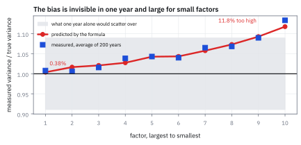
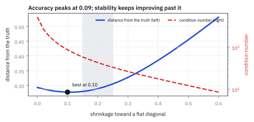
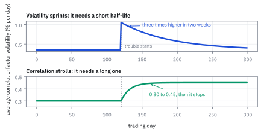
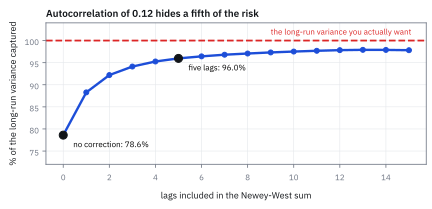

27.2 Estimating the Factor Covariance Matrix
covariance ของ factor ที่คิดตรง ๆ จาก factor return รายวันผิดสี่ทาง: สูงเกินจริงเสมอ พลิกกลับไม่มั่นคงเมื่อ factor เยอะ ลืมอดีตด้วยความเร็วเดียวกันทั้งที่ไม่ควร และมองไม่เห็นความจำเล็ก ๆ ของ factor return หน้านี้แก้ทีละข้อด้วยตัวเลข
ทีมความเสี่ยงเก็บ factor return ของ momentum ไว้ 251 วัน จาก regression ข้ามหุ้นของ 27.1 ที่รันบนหุ้น 600 ตัวทุกคืน คิดความผันผวนตรง ๆ ได้ 0.3693% ต่อวัน (ตัวเลขสมมติที่ตรงกับค่าคาดหมายพอดี) กำลังจะส่งเข้า optimizer เพื่อนในทีมเตือนว่า “หารด้วย 250 แทน 251 จะได้ไม่เอน” ความผันผวนจริงของ momentum คือเท่าไร และคำเตือนนั้นช่วยไหม?
ลองตอบก่อนเปิดเฉลย
ความผันผวนจริงคือ 0.35% ต่อวัน factor return ที่ได้ทุกคืนคือผลตอบแทนของพอร์ตหุ้นจริง จึงพกส่วนเฉพาะตัวของหุ้นในพอร์ตมาด้วย variance ที่วัดได้จึงเกินจริงเสมอ $G=0.013907$ (%²) หรือ 11.35% ของ variance จริง การหารด้วย 250 ทำให้ตัวเลขใหญ่ขึ้นอีก 0.4% ไปผิดทาง ทางแก้คือหัก $G$ ออก: $\sqrt{0.3693^2-0.013907}=0.35$
สิ่งที่เราจะสร้าง
27.1 ให้ factor return $\hat{\mathbf f}_t$ มาวันละหนึ่งชุด หน้านี้เอา 251 ชุดของหนึ่งปีมาทำเป็น covariance matrix $\boldsymbol\Omega_f$ ที่ใช้คิดความเสี่ยงของพอร์ตตาม 26.1 ทางลัดคือเฉลี่ยผลคูณ $\hat{\mathbf f}_t\hat{\mathbf f}_t^{\mathsf T}$ ตาม 8.1 แต่ทางลัดนี้ผิดสี่ทาง และแต่ละทางมีทางแก้ของมันเอง
ลำดับคือ ดูว่าทำไมค่าที่วัดได้สูงเกินจริงเสมอ แล้วคิดขนาดด้วยพอร์ตของ 27.1 ด้วยมือ จากนั้นดูว่าเมื่อ factor มี 40 ตัวแต่ข้อมูลมีแค่ครึ่งปี eigenvalue กระจายออกเองจนพลิกกลับไม่มั่นคง และแก้ด้วย shrinkage ต่อด้วยเหตุผลที่ความผันผวนกับ correlation ต้องลืมอดีตคนละความเร็ว และจบที่ autocorrelation เล็ก ๆ ที่ทำให้ความเสี่ยงรายปีต่ำเกินจริง
ศัพท์ที่ใช้ในหัวข้อนี้
- Estimation error ของ factor return ($\mathbf G$)
- covariance ของส่วนที่ $\hat{\mathbf f}_t$ คลาดจาก $\mathbf f_t$ มาจากส่วนเฉพาะตัวของหุ้นที่ factor-mimicking portfolio ถือ ต้องหักออกจาก covariance ที่วัดได้
- Shrinkage
- ผสม covariance ที่วัดได้กับเป้าที่เรียบง่าย (matrix แนวทแยงที่ค่าเท่ากันหมด) ยอมเอนนิดหนึ่งเพื่อลดความคลาดรวม ใช้เมื่อจำนวน factor ไม่เล็กเทียบกับจำนวนวัน
- Condition number
- eigenvalue ใหญ่สุดหารด้วยเล็กสุด บอกว่าการพลิกกลับ matrix ขยายความคลาดได้กี่เท่า optimizer ต้องพลิกกลับ covariance ทุกวัน
- Marchenko–Pastur
- ผลที่บอกว่า eigenvalue ของ sample covariance กระจายกว้างแค่ไหนเมื่อ covariance จริงคือ $\mathbf I$ ใช้บอกว่าการกระจายเท่าไรเป็นแค่เสียงรบกวน
- Half-life และ effective sample size
- half-life คือจำนวนวันที่น้ำหนักของข้อมูลหดเหลือครึ่ง (25.5) effective sample size คือจำนวนข้อมูลเท่ากันที่ให้ความคลาดเท่ากับค่าเฉลี่ยถ่วงนั้น
- Long-run variance และ Newey–West
- variance ของผลรวมหลายวันหารด้วยจำนวนวัน ถ้าข้อมูลมี autocorrelation มันไม่เท่า variance รายวัน Newey–West ประมาณมันโดยบวก autocovariance หลาย lag ถ่วงน้ำหนักที่ลดลง
สัญลักษณ์และหน่วย
| สัญลักษณ์ | ความหมาย | หน่วย |
|---|---|---|
| $\mathbf f_t,\ \hat{\mathbf f}_t$ | factor return จริงที่มองไม่เห็น และค่าที่ได้จาก regression ของ 27.1 | % ต่อวัน |
| $\boldsymbol\Omega_f,\ \hat{\boldsymbol\Sigma}$ | covariance จริงของ factor และ covariance ที่วัดจาก $\hat{\mathbf f}_t$ | %² |
| $\mathbf H,\ \mathbf h_k$ | matrix ที่แปลงผลตอบแทนหุ้นเป็น factor return และแถวที่ $k$ ของมัน (น้ำหนักของพอร์ต) | ไม่มีหน่วย |
| $\mathbf G,\ \sigma_i$ | covariance ของความคลาด $\hat{\mathbf f}_t-\mathbf f_t$ และความผันผวนเฉพาะตัวของหุ้น $i$ | %², % ต่อวัน |
| $m,\ T,\ q$ | จำนวน factor จำนวนวัน และ $q=m/T$ | จำนวน |
| $\delta,\ \bar\lambda$ | สัดส่วนที่ดึงเข้าหาเป้า และค่าเฉลี่ยของ eigenvalue | ไม่มีหน่วย, %² |
| $\lambda,\ N_{\rm eff}$ | ตัวคูณการลืมต่อวันของ EWMA และ effective sample size | ไม่มีหน่วย, วัน |
| $\phi,\ L$ | autocorrelation ของ factor return วันต่อวัน และจำนวน lag ใน Newey–West | ไม่มีหน่วย, วัน |
ขั้นที่ 1 — ค่าที่วัดได้คือ factor บวกเสียงของพอร์ต
ก่อนคิด covariance ต้องถามว่าตัวเลขที่เอามาเฉลี่ยคืออะไร 27.1 บอกว่า $\hat{\mathbf f}_t=\mathbf H\mathbf r_t$ แทนผลตอบแทนหุ้นด้วยสมการของ factor model แล้วดูว่าเหลืออะไร
บรรทัดที่สามใช้ $\mathbf H\mathbf B\mathbf f=\mathbf f$ ของ 27.1 (ในทาง C ที่ตั้งเงื่อนไขถ่วงมูลค่าตลาด factor return จริงก็นิยามใต้เงื่อนไขเดียวกัน จึงเท่ากันพอดี) ค่าที่วัดได้จึงเป็นของจริงบวกก้อน $\mathbf H\boldsymbol\epsilon_t$ ซึ่งคือส่วนเฉพาะตัวของหุ้นที่ factor-mimicking portfolio ถือไว้
บรรทัดที่สี่ไม่มีพจน์ไขว้ เพราะส่วนเฉพาะตัวไม่เกี่ยวกับ factor (26.1) variance ของผลรวมสองก้อนที่ไม่เกี่ยวกันคือผลรวมของ variance ทั้งสอง $\mathbf G$ ไม่มีวันติดลบ ค่าที่วัดได้จึงสูงเกินจริงเสมอ ไม่ใช่สูงบ้างต่ำบ้าง
26.5 ขั้นที่ 8 แสดงว่า $\mathbf G=(\mathbf B^{\mathsf T}\boldsymbol\Omega_\epsilon^{-1}\mathbf B)^{-1}$ เมื่อ $\mathbf B$ มี rank เต็ม แต่สูตร $\mathbf H\boldsymbol\Omega_\epsilon\mathbf H^{\mathsf T}$ ใช้ได้ทุกกรณี
ขั้นที่ 2 — ขนาดของ $\mathbf G$ คิดด้วยมือจากพอร์ต momentum ของ 27.1
โจทย์ให้อะไรมาบ้าง: แถว momentum ของ $\mathbf H$ จาก 27.1 ขั้นที่ 6 (ทุกทางแก้ของ 27.1 ให้แถวนี้เท่ากัน) ความผันผวนเฉพาะตัว $\sigma_i$ ชุดเดิม และจักรวาลจริง 600 ตัวที่สมมติว่าเป็นหุ้นแปดตัวของ 27.1 ซ้ำกัน 75 ชุด (loading กับ $\sigma_i$ เหมือนกัน แต่ส่วนเฉพาะตัวของแต่ละตัวเป็นอิสระกัน) เพราะ $\boldsymbol\Omega_\epsilon$ เป็นแนวทแยง แนวทแยงของ $\mathbf G$ จึงเหลือผลรวมกำลังสอง
คำตอบ: ด้วยหุ้นแค่แปดตัว ความคลาดของ momentum รายวันคือ $\sqrt{1.0430}=1.0213\%$ ใหญ่กว่าความผันผวนของ momentum เอง (0.35%) เกือบสามเท่า ในจักรวาล 600 ตัว หุ้นแบบที่ $i$ มีอยู่ 75 ตัว พอร์ตแบ่งน้ำหนัก $h_i$ ให้พวกมันตัวละ $h_i/75$ ผลรวมกำลังสองของทั้ง 75 ตัวจึงเป็น $75\times(h_i/75)^2\sigma_i^2=h_i^2\sigma_i^2/75$ ทุกพจน์หารด้วย 75 $G$ จึงเหลือ 0.013907 (%²) หรือความคลาด 0.1179% ต่อวัน ทำแบบเดียวกันกับพอร์ตของ market (ทาง C) ได้ $G_{\rm mkt}=0.5274/75=0.007032$
ตรวจเองใน 10 วินาที: พจน์ที่ห้า $0.2230^2\times2.0^2=0.0497\times4=0.1989$ ใกล้ 0.19883 (ต่างเพราะปัด $h$) และพจน์ที่ใหญ่ที่สุดมาจากหุ้นตัวที่ 4 ซึ่งทั้งถือน้ำหนักมากและเหวี่ยงแรงที่สุด ($\sigma=2.6\%$)
ขั้นที่ 3 — เอนเท่าไร และทำไมมองด้วยตาไม่เห็น
ตอนนี้เทียบ $G$ กับ variance จริงของ factor โดยสมมติว่า market ผันผวน 1.0% ต่อวัน และ momentum 0.35% ต่อวัน แล้วเทียบความเอนกับความคลาดแบบสุ่มของ variance ที่วัดจากข้อมูลปีเดียว
factor ใหญ่แทบไม่เป็นไร market เอน 0.70% แต่ factor เล็กเจ็บหนัก momentum เอน 11.35% ใน variance หรือ 5.52% ในความผันผวน ทั้งที่ $G$ ของสองตัวต่างกันแค่สองเท่า เพราะ $G$ ถูกหารด้วย variance ของ factor เอง
factor เล็กคือตัวที่ hedge กันบ่อยที่สุด optimizer จึงเสียเงิน hedge ความเสี่ยงที่ไม่มีอยู่จริงทุกวัน
ทำไมไม่มีใครเห็น: ถ้าผลตอบแทนเป็น Normal แต่ละ $\hat f_t^2$ มี variance $2\sigma^4$ ค่าเฉลี่ย 251 ตัวจึงคลาดสัมพัทธ์ $\sqrt{2/251}=8.93\%$ ความเอน 11.35% จึงจมอยู่ในความคลาดของปีเดียว แต่มันไม่หายเมื่อเฉลี่ยหลายปี เพราะมันไปทางเดียวเสมอ ต้องหักด้วยสูตร ไม่ใช่รอให้เห็น
บรรทัดสุดท้ายคือทางแก้ ส่วนการหารด้วย 250 คูณทุกอย่างด้วย $251/250=1.004$ ซึ่งแก้อีกปัญหาหนึ่ง (การหักค่าเฉลี่ย) และไปผิดทาง
Figure 27.2a — factor เล็กเจ็บหนัก factor ใหญ่แทบไม่เป็นไร

รูปนี้มาจาก model อีกตัวที่ใหญ่กว่าตัวอย่างในหน้า: หุ้น 800 ตัว factor 10 ตัวที่ความผันผวน 1.10% ถึง 0.20% ต่อวัน (correlation 0.3 ทุกคู่) loading สุ่ม และความผันผวนเฉพาะตัว 1.2% ถึง 3.0% (numpy seed 41)
แกนนอนคือ factor เรียงจากใหญ่ไปเล็ก แกนตั้งคือ variance ที่วัดได้หารด้วย variance จริง เส้นแดงคือ $1+G_{kk}/[\boldsymbol\Omega_f]_{kk}$ จากสูตร จุดฟ้าคือค่าเฉลี่ยของการจำลอง 200 ปี ปีละ 251 วัน แถบเทาคือ $1\pm\sqrt{2/251}$ ที่ปีเดียวกระจายได้ ป้ายบอกว่าตัวใหญ่สุดเอน 0.38% ตัวเล็กสุดเอน 11.8% รูปแบบเดียวกับ market 0.70% และ momentum 11.35% ในหน้านี้
ขั้นที่ 4 — factor 40 ตัว ข้อมูลครึ่งปี: eigenvalue กระจายเอง
model จริงมีราว 40 factor (style กับ industry) และมักใช้ข้อมูล 126 วันหรือครึ่งปีเพื่อให้ตอบสนองเร็ว ลองกรณีที่ง่ายที่สุด: covariance จริงคือ $\mathbf I$ ทุก factor ผันผวนเท่ากันและไม่สัมพันธ์กัน eigenvalue จริงทุกตัวคือ 1 ผลของ Marchenko และ Pastur (1967) บอกว่า eigenvalue ของ sample covariance กระจายอยู่ระหว่างสองขอบนี้เมื่อ $m$ กับ $T$ ใหญ่ที่อัตราส่วน $q$ คงที่
ความจริงมี condition number 1 แต่ข้อมูลครึ่งปีทำให้มันดูเหมือน 12.83 โดยไม่มีโครงสร้างอะไรเลย eigenvalue ใหญ่ถูกดันขึ้น ตัวเล็กถูกกดลง โค้ดท้ายหน้าจำลองครึ่งปีแบบนี้ 40 รอบ (seed 27) ได้ค่าเฉลี่ยตัวเล็กสุด 0.2175 และใหญ่สุด 2.3235 ใกล้ขอบของสูตร ต่างเพราะ 40 factor ยังไม่ใหญ่พอให้ขอบคม
บรรทัดสุดท้ายคือราคาบนโต๊ะ optimizer ชอบทิศที่ model บอกว่าเสี่ยงน้อย พอร์ตตาม eigenvector ของ 0.1906 ถูกบอกว่าผันผวน $\sqrt{0.1906}=0.437$ ทั้งที่จริงคือ 1 ความเสี่ยงจริงสูงกว่าที่เห็น 2.29 เท่า และพอร์ตที่ optimizer เลือกจะเอียงไปหาทิศพวกนี้พอดี
ที่ 10 factor กับ 251 วัน $q=0.0398$ ขอบแคบลงเหลือ 0.6406 ถึง 1.4390 ปัญหาจึงเป็นเรื่องของ model ใหญ่ที่ข้อมูลสั้น
ขั้นที่ 5 — ดึงเข้าหาเป้า: eigenvalue ขยับเข้าหาค่าเฉลี่ย
ทางแก้คือผสม covariance ที่หัก $\mathbf G$ แล้วกับ matrix แนวทแยงที่ค่าเท่ากับค่าเฉลี่ยของ eigenvalue นี่คือนิยามของ shrinkage แบบ Ledoit–Wolf คำถามคือมันทำอะไรกับ eigenvalue: คูณทั้งสองข้างด้วย eigenvector $\mathbf e$ ของ $\mathbf S$ ที่มี eigenvalue $\lambda$
จังหวะสำคัญคือบรรทัดที่สาม $\mathbf I$ คูณ vector ไหนก็ได้ตัวเดิม eigenvector จึงไม่เปลี่ยน มีแค่ eigenvalue ที่ถูกลากเข้าหา $\bar\lambda$ เป็นเส้นตรง ตัวเล็กขึ้น ตัวใหญ่ลง condition number หดลงเสมอ และ trace ไม่เปลี่ยน ความเสี่ยงรวมโดยเฉลี่ยจึงเท่าเดิม
ตัวเลขใช้ขอบของขั้นที่ 4 กับ $\bar\lambda=1$ condition number ตกจาก 12.83 เหลือ 6.12 และทิศที่แย่ที่สุดคลาดเหลือ 1.68 เท่าแทน 2.29 ที่ $\delta=0.5$ ได้ 0.5953 กับ 1.7222 condition number 2.89
ราคาที่จ่ายคือความเอน ถ้าความจริงไม่แบน เช่น market ผันผวน 1.0% แต่ momentum 0.35% การลากทุกอย่างเข้าหาค่าเฉลี่ยลบความต่างที่มีจริงทิ้งด้วย $\delta$ ที่ดีที่สุดจึงขึ้นกับว่าความจริงห่างจากเป้าแค่ไหน
สูตรของ Ledoit และ Wolf ประมาณ $\delta$ จากข้อมูลเอง และคนทำงานมักยอมดึงมากกว่านั้นเพื่อแลกกับ matrix ที่มั่นคง
Figure 27.2b — ความแม่นกับความมั่นคงไม่ได้ต้องการ $\delta$ ค่าเดียวกัน

การจำลอง factor 40 ตัว 126 วัน ความผันผวนจริงไล่จาก 1.10% ถึง 0.15% correlation 0.25 ทุกคู่ 120 รอบ (numpy seed 5) แกนนอนคือ $\delta$ จาก 0 ถึง 0.6 ทีละ 0.02
เส้นฟ้า (แกนซ้าย) คือระยะห่าง Frobenius สัมพัทธ์จากความจริง ต่ำสุดที่จุด 0.10 ของตาราง (ป้าย “best at 0.10” ส่วนชื่อรูปเขียน 0.09 ซึ่งมาจากการคำนวณที่ละเอียดกว่าของหน้าเดิม) เส้นประแดง (แกนขวา สเกล log) คือ condition number ที่ลดลงตลอดแม้เลยจุดที่แม่นที่สุด แถบเทา 0.15 ถึง 0.25 มีป้ายว่า “what people actually use” เป็นป้ายของผู้วาด ไม่ใช่ข้อมูลที่วัดมา
ขั้นที่ 6 — ค่าเฉลี่ยที่ลืมอดีตมีข้อมูลเท่าไร
ข้อที่สามเริ่มจากคำถามว่า EWMA ของ 25.5 ที่ half-life หนึ่งมีข้อมูลเท่ากับค่าเฉลี่ยธรรมดากี่วัน และข้อมูลของมันเก่าเฉลี่ยกี่วัน สองตัวเลขนี้คือราคากับของที่ได้เมื่อเลือก half-life ให้ $y_s$ เป็นข้อมูลที่เป็นอิสระกัน variance เท่ากัน
$s=0,1,2,\ldots$ คืออายุของข้อมูลเป็นวัน บรรทัดที่สองใช้ variance ของผลรวมถ่วงของสิ่งที่เป็นอิสระกัน บรรทัดที่สามคืออนุกรมเรขาคณิตอัตราส่วน $\lambda^2$ แล้วแยก $1-\lambda^2=(1-\lambda)(1+\lambda)$
ค่าเฉลี่ยธรรมดาของ $N$ ตัวมี $\sum w^2=1/N$ จึงอ่านบรรทัดที่สี่ได้ว่า EWMA มีข้อมูลเท่ากับ $N_{\rm eff}$ วัน บรรทัดสุดท้ายคืออายุเฉลี่ยของข้อมูลที่ใช้ ได้จากอนุกรม $\sum s\lambda^s=\lambda/(1-\lambda)^2$
ขั้นที่ 7 — ความผันผวนเร็ว correlation ช้า: คิดเป็นตัวเลข
โจทย์ให้อะไรมาบ้าง: แยก $\boldsymbol\Omega_f=\mathbf V\mathbf C\mathbf V$ เป็นความผันผวน $\mathbf V$ (แนวทแยง) กับ correlation $\mathbf C$ แล้วประมาณแต่ละชิ้นด้วย EWMA ของตัวเอง ความผันผวนใช้ half-life 63 วัน correlation ใช้ 500 วัน ช่วงสามเดือนถึงสองปีนี้คือช่วงที่ model หุ้นรายวันใช้กัน ความคลาดของ correlation จากข้อมูล $N$ ตัวที่เป็น Normal ประมาณได้ด้วย $(1-\rho^2)/\sqrt N$ ที่ $\rho=0.30$
คำตอบ: ที่ half-life 63 วัน ความผันผวนคลาดแค่ 5.24% (คิดแบบเดียวกับขั้นที่ 3: variance คลาด $\sqrt{2/N}$ ความผันผวนคลาดครึ่งหนึ่งของนั้น) แต่ correlation 0.30 คลาด ±0.0675 หรือเกือบหนึ่งในสี่ของตัวมันเอง correlation จึงต้องการข้อมูลมากกว่า ที่ 500 วันเหลือ ±0.0240 แต่ข้อมูลเก่าเฉลี่ย 720.8 วัน หรือเกือบสามปี ถ้าใช้ half-life นี้กับความผันผวนด้วย ตัวเลขความเสี่ยงจะเล่าเรื่องของตลาดเมื่อสามปีก่อน
ตรวจเองใน 10 วินาที: $\lambda=0.5^{1/63}$ และ $\lambda^{63}=0.5$ พอดี $N_{\rm eff}\approx2h/\ln2=2(63)/0.6931=181.8$ ตรงกับบรรทัดที่สอง
มีรายละเอียดหนึ่งในสูตรของ correlation: ต้องหาร $\hat f_{k,t}$ ด้วยความผันผวนของวันนั้นก่อน แล้วค่อยเฉลี่ยผลคูณ ถ้าไม่หาร วันที่ความผันผวนของ factor หนึ่งพุ่งจะครองค่าเฉลี่ย สมมติครึ่งหนึ่งของวันความผันผวนของ factor แรกเป็นสามเท่า อีกตัวคงเดิม และ correlation จริง 0.30 ทุกวัน ค่าที่ได้คือ $0.30\times(1+3)/\sqrt{(1+9)(1+1)}=0.2683$ ต่ำกว่าความจริงทั้งที่ correlation ไม่ได้เปลี่ยนเลย
Figure 27.2c — ความผันผวนขยับแรง correlation ขยับน้อย

ภาพวาดประกอบจากสูตร ไม่ใช่ข้อมูลหรือค่าที่ประมาณ แผงบนคือความผันผวนของ factor 0.35% ต่อวัน ที่กระโดดเป็น 1.05% ทันทีในวันที่ 120 แล้วลดลงแบบ exponential ด้วยค่าคงที่เวลา 70 วัน ป้าย “three times higher in two weeks” หมายถึงขนาดของการกระโดด (สองสัปดาห์หลังเริ่มยังสูง 2.64 เท่า)
แผงล่างคือ correlation เฉลี่ยที่ไต่จาก 0.30 เข้าหา 0.45 ด้วยค่าคงที่เวลา 12 วัน (ถึง 0.40 ในสองสัปดาห์) สิ่งที่รูปแสดงจริงคือขนาด ความผันผวนขยับสามเท่า correlation ขยับ 0.15 เหตุผลที่ correlation ใช้ half-life ยาวคือความคลาดในขั้นที่ 7 ไม่ใช่ความเร็วในรูปนี้
ขั้นที่ 8 — ความจำเล็ก ๆ ที่ทำให้ความเสี่ยงรายปีต่ำเกินจริง
ข้อสุดท้าย: factor return รายวันมี autocorrelation เล็ก ๆ ที่ไม่เป็นศูนย์ ถ้ามองเป็น AR(1) ของ 16.2 ที่ $\phi=0.12$ (ค่าสมมติ) variance ของผลรวม $T$ วันไม่ใช่ $T$ เท่าของ variance รายวัน กางผลรวมออกแล้วนับพจน์ไขว้
คู่วันที่ห่างกัน $l$ วันมีอยู่ $T-l$ คู่ และแต่ละคู่นับสองครั้งในตาราง $T\times T$ จึงได้บรรทัดที่สอง หารด้วย $T\gamma_0$ แล้วให้ $T$ โต น้ำหนัก $1-l/T$ เข้าใกล้ 1 เหลืออนุกรม $2\sum\phi^l=2\phi/(1-\phi)$ ที่ $T=251$ พอดีได้ 1.2715 แทบเท่ากัน
autocorrelation แค่ 0.12 ซึ่งหลายคนปัดทิ้ง ทำให้ความผันผวนรายปีจริงสูงกว่าการคูณ $\sqrt{251}$ ตรง ๆ 12.82% กองทุนที่ตั้งเป้าความเสี่ยง 10% ต่อปีจะวิ่งจริงที่ 11.28% หรือพูดอีกทางว่าตัวเลขที่รายงานต่ำกว่าความจริง 11.36% ถ้า $\phi$ ติดลบ ทุกอย่างกลับทิศ ความเสี่ยงรายปีจะถูกรายงานสูงเกินจริงแทน
ขั้นที่ 9 — Newey–West: เติม lag กลับเข้าไป
ทางแก้คือประมาณ variance ระยะยาวตรง ๆ โดยเติม autocovariance $\mathbf C_l=\tfrac1T\sum_t\hat{\mathbf f}_t\hat{\mathbf f}_{t-l}^{\mathsf T}$ เข้าไป ถ่วงด้วยน้ำหนักที่ลดลงเป็นเส้นตรง นี่คือนิยามของ Newey–West (1987) น้ำหนักแบบนี้รับประกันว่าผลลัพธ์ไม่มีทิศที่ variance ติดลบ แล้วคิดค่าคาดหมายของมันกับ AR(1) ของขั้นที่ 8 ซึ่ง $\mathbf C_l$ มีค่าคาดหมาย $(1-l/T)\gamma_l$
$R_L$ คือค่าคาดหมายของ $\hat\Omega_L$ หารด้วย variance ระยะยาว $\Omega_{\rm long}=\gamma_0(1+\phi)/(1-\phi)$ ซึ่งคือสิ่งที่ต้องการจริง ได้มาจากการแทน $\mathrm E[\mathbf C_l]=(1-l/T)\phi^l\gamma_0$ ลงในบรรทัดแรก
ถ้าไม่เติม lag เลย ($L=0$) ได้แค่ $0.88/1.12=78.57\%$ ของมัน ความเสี่ยงหายไปหนึ่งในห้า ห้า lag ได้คืน 95.87% หลังจากนั้นได้คืนช้าลงมาก เพราะ $\phi^l$ หดเร็ว และน้ำหนัก $k_l$ ยังกด lag ไกล ๆ ไว้ ถ้าลองกับ $\phi=0$ ทุกบรรทัดให้ 100% พอดี การแก้ไม่ทำร้ายข้อมูลที่ไม่มีความจำ
Figure 27.2d — เติม lag แล้วจับ variance ระยะยาวได้มากขึ้น

การจำลอง AR(1) ที่ $\phi=0.12$ ยาว 251 วัน 400 ชุด (numpy seed 11 ตัด 200 วันแรกทิ้ง) แกนนอนคือจำนวน lag 0 ถึง 15 แกนตั้งคือเปอร์เซ็นต์ของ variance ระยะยาวที่ Newey–West จับได้โดยเฉลี่ย เส้นประแดงคือ 100% ที่ต้องการ ป้ายบอก 78.6% ที่ไม่แก้เลย และ 96.0% ที่ห้า lag ค่าคาดหมายจากสูตรของขั้นที่ 9 คือ 78.57% กับ 95.87% ส่วนต่างคือความคลาดของการจำลอง ชื่อรูป “hides a fifth of the risk” คือ $1-0.7857=21.4\%$ ของ variance
คำถามที่ควรถามออกมาดัง ๆ
ถ้า $G$ ของ market เล็กกว่า variance ของมันกว่าร้อยเท่า (0.007032 เทียบ 1.0) ทำไมต้องสนใจ? เพราะ $\mathbf G$ ไม่ได้เล็กเท่ากันเมื่อเทียบกับทุก factor momentum ที่เล็กกว่า market เกือบสามเท่าในความผันผวนเอนถึง 11.35% และ factor เล็กคือตัวที่ถูก hedge และถูกใช้ตัดสินขนาดพอร์ต
ใช้ข้อมูลยาว ๆ ให้ $m/T$ เล็กไม่ดีกว่าหรือ? ข้อมูลห้าปีทำให้ $q$ เล็กจริง แต่ข้อมูลเก่าเล่าเรื่องของตลาดที่ไม่มีแล้ว ขั้นที่ 7 แสดงราคาของการมองย้อนไกลเป็นตัวเลข shrinkage คือทางที่ได้ความมั่นคงโดยไม่ต้องมองย้อนไกล
shrinkage ทำให้ค่าเอน แล้วยอมทำไม? เพราะความคลาดรวมคือความเอนบวกความคลาดแบบสุ่ม ที่ $q=0.32$ ส่วนสุ่มใหญ่กว่ามาก ยอมเอนนิดหนึ่งแลกกับ eigenvalue ที่ไม่ถูกกดจนต่ำเกินจริง 2.29 เท่า
ความผิดที่ให้ตัวเลขผิดแบบเงียบ ๆ
หัก $\mathbf G$ อย่างเดียวแล้วได้ variance ติดลบ: factor ที่ผันผวนจริงแค่ 0.05% มี variance 0.0025 เทียบกับ $G=0.013907$ ค่าที่วัดได้เฉลี่ย 0.016407 ปีที่ออกต่ำสองเท่าของความคลาด ($1-2\times0.0893$) วัดได้ 0.013478 หัก $G$ แล้วเหลือ −0.00043 ซึ่งเป็นไปไม่ได้ และทำให้ optimizer พัง ต้องหักแล้วดึงเข้าหาเป้าในขั้นเดียวกันตามขั้นที่ 5
ใช้ half-life เดียวกับทุกอย่าง: สั้นทั้งคู่ correlation 0.30 แกว่ง ±0.0675 ตามข่าวรายสัปดาห์ ยาวทั้งคู่ ความผันผวนเล่าเรื่องของข้อมูลที่เก่าเฉลี่ย 720.8 วัน และตามวิกฤตไม่ทัน ซึ่งเป็นตอนที่ต้องการความแม่นที่สุด
คูณ $\sqrt{251}$ โดยไม่ดู autocorrelation: ที่ $\phi=0.12$ ความเสี่ยงรายปีต่ำเกินจริง 11.36% เพดาน 10% กลายเป็น 11.28% จริง โดยไม่มีรายงานไหนเตือน
ใช้ทำอะไรบนโต๊ะจริง
ทุกคืนทีม risk model ต่อสายงานตามลำดับนี้: หา $\hat{\mathbf f}_t$ ด้วย regression ของ 27.1 เก็บ $\mathbf G$ ของวันนั้นไว้ อัปเดตความผันผวนด้วย half-life สั้น หาร factor return ด้วยความผันผวนของวันนั้นแล้วอัปเดต correlation ด้วย half-life ยาว เติม lag แบบ Newey–West หัก $\mathbf G$ แล้วดึงเข้าหาเป้า ก่อนส่งให้ optimizer ตัวเลขที่ควรเฝ้าดูทุกวันคือ condition number ถ้ามันพุ่ง แปลว่ามีทิศที่ model เชื่อว่าเสี่ยงน้อยเกินจริง
สามโจทย์ตรวจความเข้าใจ
1. ถ้าจักรวาลมีหุ้น 8,000 ตัว (หุ้นแปดตัวซ้ำ 1,000 ชุด) variance ของ momentum ที่วัดได้เอนกี่เปอร์เซ็นต์ และความผันผวนเอนกี่เปอร์เซ็นต์?
เฉลย
$G=1.0430/1{,}000=0.001043$ อัตราส่วน $1+0.001043/0.1225=1.0085$ variance เอน 0.85% ความผันผวน $\sqrt{1.0085}=1.0042$ เอน 0.42% จักรวาลใหญ่ขึ้น $8{,}000/600=13.3$ เท่า ความเอน 11.35% จึงหาร 13.3 เท่ากัน ตลาดใหญ่จึงสำคัญต่อคุณภาพของ covariance
2. model ที่มี 10 factor ใช้ข้อมูล 251 วัน ถ้า covariance จริงคือ $\mathbf I$ eigenvalue จะกระจายระหว่างเท่าไร และ condition number ราวเท่าไร?
เฉลย
$q=10/251=0.0398$, $\sqrt q=0.1996$ ขอบล่าง $(1-0.1996)^2=0.6406$ ขอบบน $(1.1996)^2=1.4390$ condition number $1.4390/0.6406=2.25$ ต่างจาก 12.83 ของ 40 factor กับ 126 วันมาก shrinkage จึงสำคัญน้อยกว่าใน model เล็กที่ข้อมูลยาว
3. ถ้า autocorrelation รายวันเป็น $\phi=-0.05$ การคูณความผันผวนรายวันด้วย $\sqrt{251}$ ทำให้ความผันผวนรายปีผิดไปทางไหน และกี่เปอร์เซ็นต์?
เฉลย
อัตราส่วน $(1-0.05)/(1+0.05)=0.9048$ ความผันผวนจริงคือ $\sqrt{0.9048}=0.9512$ เท่าของการคูณตรง ๆ การคูณตรง ๆ จึงรายงานสูงเกินจริง $1/0.9512-1=5.13\%$ ทิศของความผิดตามเครื่องหมายของ $\phi$ เสมอ
คำนวณซ้ำด้วย JavaScript
โค้ดนี้สร้าง model ของ 27.1 แก้ระบบที่มีเงื่อนไขถ่วงมูลค่าตลาดเพื่อได้ $\mathbf H$ และ $\mathbf G$ คิดความเอนในจักรวาล 600 ตัว ขอบของ Marchenko–Pastur และจำลอง sample covariance 40 รอบพร้อมหา eigenvalue ด้วยการหมุนของ Jacobi คิดผลของ shrinkage, $N_{\rm eff}$, ความคลาดของ correlation, AR(1) และค่าคาดหมายของ Newey–West แล้วพิมพ์ตัวเลขหลักหนึ่งบรรทัด
const {sqrt, abs, log, cos, sin, PI} = Math;
function matrix(name, A) {
if (!Array.isArray(A) || A.length === 0 || !A.every(row => Array.isArray(row) && row.length === A[0].length && row.every(Number.isFinite))) {
throw new TypeError(`${name} must be a non-empty rectangular array of finite numbers`);
}
return A;
}
const T = A => A[0].map((_, j) => A.map(row => row[j]));
const mul = (A, B) => A.map(row => B[0].map((_, j) => row.reduce((s, a, k) => s + a * B[k][j], 0)));
// Gauss-Jordan inverse with partial pivoting.
function inverse(A) {
const n = matrix('A', A).length, M = A.map((row, i) => [...row, ...row.map((_, j) => (i === j ? 1 : 0))]);
for (let c = 0; c < n; c++) {
let p = c;
for (let i = c + 1; i < n; i++) if (abs(M[i][c]) > abs(M[p][c])) p = i;
if (abs(M[p][c]) < 1e-12) throw new RangeError('matrix is singular');
[M[c], M[p]] = [M[p], M[c]];
const v = M[c][c];
for (let j = 0; j < 2 * n; j++) M[c][j] /= v;
for (let i = 0; i < n; i++) if (i !== c) { const g = M[i][c]; for (let j = 0; j < 2 * n; j++) M[i][j] -= g * M[c][j]; }
}
return M.map(row => row.slice(n));
}
// Steps 1-2: constrained WLS of 27.1 (way C). The bordered inverse gives H and G = H Omega_eps H'.
function factorMimicking(B, sigma, c) {
matrix('B', B);
if (!Array.isArray(sigma) || sigma.length !== B.length || !sigma.every(s => Number.isFinite(s) && s > 0)) throw new RangeError('every idiosyncratic volatility must be positive, one per stock');
const BW = T(B).map(row => row.map((x, i) => x / (sigma[i] * sigma[i])));
const K = mul(BW, B).map((row, i) => [...row, c[i]]);
K.push([...c, 0]);
const P = inverse(K).slice(0, c.length).map(row => row.slice(0, c.length));
return {H: mul(P, BW), G: P};
}
const industry = [0, 0, 0, 1, 1, 2, 2, 2];
const momentum = [1.2, -0.4, 0.6, -1.4, 0.9, -0.7, 0.3, -0.5];
const B = industry.map((g, i) => [1, g === 0 ? 1 : 0, g === 1 ? 1 : 0, g === 2 ? 1 : 0, momentum[i]]);
const sigma = [1.8, 2.2, 1.5, 2.6, 2.0, 2.4, 1.7, 2.1]; // % per day
const cap = [300, 180, 220, 400, 150, 260, 340, 190];
const shares = [0, 1, 2].map(g => cap.filter((_, i) => industry[i] === g).reduce((a, b) => a + b, 0) / 2040);
const {H, G} = factorMimicking(B, sigma, [0, ...shares, 0]);
const hMom = H[4], terms = hMom.map((h, i) => h * h * sigma[i] * sigma[i]);
const copies = 75, days = 251; // 600 stocks, one year of daily returns
const G600 = {market: G[0][0] / copies, momentum: G[4][4] / copies};
const trueVar = {market: 1.0 ** 2, momentum: 0.35 ** 2}; // %^2 per day, assumed
const inflation = {market: 1 + G600.market / trueVar.market, momentum: 1 + G600.momentum / trueVar.momentum};
// Step 4: Marchenko-Pastur edges; step 5: shrinkage moves every eigenvalue toward the mean.
function mpEdges(m, n) {
if (!Number.isInteger(m) || !Number.isInteger(n) || m < 1 || n <= m) throw new RangeError('need whole numbers with more days than factors');
const q = m / n;
return {q, low: (1 - sqrt(q)) ** 2, high: (1 + sqrt(q)) ** 2};
}
const shrink = (lambda, delta, mean) => (1 - delta) * lambda + delta * mean;
function mulberry32(seed) {
return () => {
seed |= 0; seed = seed + 0x6D2B79F5 | 0;
let t = Math.imul(seed ^ seed >>> 15, 1 | seed);
t = t + Math.imul(t ^ t >>> 7, 61 | t) ^ t;
return ((t ^ t >>> 14) >>> 0) / 4294967296;
};
}
function normals(rnd) {
let spare = null;
return () => {
if (spare !== null) { const s = spare; spare = null; return s; }
let u = 0;
while (u === 0) u = rnd();
const v = rnd(), R = sqrt(-2 * log(u));
spare = R * sin(2 * PI * v);
return R * cos(2 * PI * v);
};
}
// Cyclic Jacobi rotations: all eigenvalues of a symmetric matrix, sorted.
function eigenvalues(S) {
const n = matrix('S', S).length, A = S.map(row => [...row]);
if (A.some((row, i) => row.length !== n || row.some((x, j) => abs(x - A[j][i]) > 1e-12 * (abs(x) + 1)))) throw new RangeError('matrix must be square and symmetric');
for (let sweep = 0; sweep < 100; sweep++) {
let off = 0;
for (let i = 0; i < n; i++) for (let j = i + 1; j < n; j++) off += A[i][j] * A[i][j];
if (off < 1e-26) break;
for (let p = 0; p < n; p++) for (let q = p + 1; q < n; q++) {
if (A[p][q] === 0) continue;
const theta = (A[q][q] - A[p][p]) / (2 * A[p][q]);
const t = (theta >= 0 ? 1 : -1) / (abs(theta) + sqrt(theta * theta + 1)), c = 1 / sqrt(t * t + 1), s = t * c;
for (let k = 0; k < n; k++) { const akp = A[k][p], akq = A[k][q]; A[k][p] = c * akp - s * akq; A[k][q] = s * akp + c * akq; }
for (let k = 0; k < n; k++) { const apk = A[p][k], aqk = A[q][k]; A[p][k] = c * apk - s * aqk; A[q][k] = s * apk + c * aqk; }
}
}
return A.map((row, i) => row[i]).sort((a, b) => a - b);
}
// Sample covariance (divide by n, no mean removed) of m independent unit-variance factors: the truth is I.
function sampleCovariance(m, n, z) {
const X = Array.from({length: m}, () => Array.from({length: n}, z));
return X.map(a => X.map(b => a.reduce((s, x, t) => s + x * b[t], 0) / n));
}
const edges = mpEdges(40, 126), z = normals(mulberry32(27));
const draws = Array.from({length: 40}, () => { const e = eigenvalues(sampleCovariance(40, 126, z)); return {low: e[0], high: e[e.length - 1], mean: e.reduce((a, b) => a + b, 0) / e.length}; });
const avg = key => draws.reduce((s, d) => s + d[key], 0) / draws.length;
// Steps 6-7: effective sample size and average age of an exponentially weighted average.
function lambdaFromHalfLife(h) {
if (typeof h !== 'number' || !Number.isFinite(h) || !(h > 0)) throw new RangeError('half-life must be a positive number of days');
return 0.5 ** (1 / h);
}
const ewma = h => { const l = lambdaFromHalfLife(h); return {lambda: l, nEff: (1 + l) / (1 - l), age: l / (1 - l)}; };
const vol63 = ewma(63), corr500 = ewma(500);
// Steps 8-9: AR(1) variance ratio and the expected share of the long-run variance Newey-West captures.
function ar1Ratio(phi, n) {
if (typeof phi !== 'number' || !(abs(phi) < 1)) throw new RangeError('autocorrelation must be strictly between -1 and 1');
let s = 1;
for (let l = 1; l < n; l++) s += 2 * (1 - l / n) * phi ** l;
return s;
}
function neweyWestShare(phi, lags, n) {
if (!Number.isInteger(lags) || lags < 0) throw new RangeError('lags must be a whole number, 0 or more');
let s = 1;
for (let l = 1; l <= lags; l++) s += 2 * (1 - l / (lags + 1)) * (1 - l / n) * phi ** l;
return s * (1 - phi) / (1 + phi);
}
const phi = 0.12, limit = (1 + phi) / (1 - phi), ten = mpEdges(10, 251), small = 0.05 ** 2 + G600.momentum;
console.log(JSON.stringify({
hMom, terms, G8: {market: G[0][0], momentum: G[4][4]}, hMarket: H[0], G600, inflation,
volRatio: {market: sqrt(inflation.market), momentum: sqrt(inflation.momentum)},
measuredVol: sqrt(trueVar.momentum + G600.momentum), se8: sqrt(G[4][4]), se600: sqrt(G600.momentum), sampling: sqrt(2 / days), divisor: days / (days - 1),
mp: {...edges, cond: edges.high / edges.low, understate: 1 / sqrt(edges.low), predictedVol: sqrt(edges.low),
shrunk: [0.2, 0.5].map(d => ({delta: d, low: shrink(edges.low, d, 1), high: shrink(edges.high, d, 1),
cond: shrink(edges.high, d, 1) / shrink(edges.low, d, 1), understate: 1 / sqrt(shrink(edges.low, d, 1))}))},
sim: {low: avg('low'), high: avg('high'), mean: avg('mean'), first: [draws[0].low, draws[0].high]},
ewma: {vol63, corr500, volError: 1 / sqrt(2 * vol63.nEff), corrNoise63: (1 - 0.3 ** 2) / sqrt(vol63.nEff), corrNoise500: (1 - 0.3 ** 2) / sqrt(corr500.nEff),
approx63: 2 * 63 / log(2)},
leak: 0.30 * (1 + 3) / sqrt((1 + 9) * (1 + 1)),
ar: {limit, finite: ar1Ratio(phi, days), volUp: sqrt(limit), target: 10 * sqrt(limit), naiveLow: 1 - 1 / sqrt(limit),
captured: [0, 1, 2, 5, 10].map(L => neweyWestShare(phi, L, days)), zeroPhi: neweyWestShare(0, 5, days)},
negativeCase: {measured: small, lowYear: small * (1 - 2 * sqrt(2 / days)), corrected: small * (1 - 2 * sqrt(2 / days)) - G600.momentum},
exercises: {eightThousand: G[4][4] / 1000 / trueVar.momentum, ten: {...ten, cond: ten.high / ten.low},
negativePhi: {ratio: (1 - 0.05) / (1 + 0.05), vol: sqrt((1 - 0.05) / (1 + 0.05)), overstate: 1 / sqrt((1 - 0.05) / (1 + 0.05)) - 1}}
}));ที่มาที่ไป
Vladimir Marchenko กับ Leonid Pastur หารูปการกระจายของ eigenvalue ของ sample covariance ในปี 1967 Tim Bollerslev เสนอในปี 1990 ให้ความผันผวนเปลี่ยนตามเวลาแต่ correlation คงที่ และ Robert Engle ขยายเป็น dynamic conditional correlation ในปี 2002 Whitney Newey กับ Kenneth West เสนอตัวประมาณ variance ระยะยาวที่ไม่ติดลบในปี 1987 และ Olivier Ledoit กับ Michael Wolf เสนอ shrinkage เข้าหาเป้าพร้อมสูตรเลือก $\delta$ จากข้อมูลในปี 2003–2004
ข้อจำกัด: สี่การแก้ สมมติอะไรไว้
| การแก้ | สมมติอะไร | ของจริง | ผลเวลาใช้งาน |
|---|---|---|---|
| หัก $\mathbf G$ | รู้ $\boldsymbol\Omega_\epsilon$ และ model ถูก | $\sigma_i$ เองก็ประมาณมา (27.4) | หักได้เกือบถูก ต้องดึงเข้าหาเป้ากันค่าติดลบ |
| shrinkage เข้าหาแนวทแยงแบน | เป้าที่ทุก factor เหมือนกันไม่ไกลจากความจริง | factor ผันผวนต่างกันหลายเท่า | ดึงมากไปลบความต่างที่มีจริง |
| half-life สองค่า | ความผันผวนกับ correlation เปลี่ยนคนละจังหวะ | ในวิกฤต correlation ก็กระโดดได้ | correlation ตามไม่ทันช่วงสั้น ๆ |
| Newey–West | ความจำสั้นและคงที่ เช่น AR(1) | $\phi$ เปลี่ยนตามช่วงเวลา | เลือก $L$ มากไปเพิ่มความคลาด น้อยไปเหลือความเอน |
สิ่งที่ควรตอบได้หลังอ่าน
- $\hat{\mathbf f}_t=\mathbf f_t+\mathbf H\boldsymbol\epsilon_t$ covariance ที่วัดได้จึงเท่ากับ $\boldsymbol\Omega_f+\mathbf G$ เสมอ และ $\mathbf G$ คือ variance เฉพาะตัวของ factor-mimicking portfolio
- ในจักรวาล 600 ตัว momentum เอน 11.35% ใน variance แต่ market แค่ 0.70% ความเอนนี้จมในความคลาด 8.93% ของปีเดียว จึงต้องหักด้วยสูตร
- 40 factor กับ 126 วันทำให้ eigenvalue ของความจริง $\mathbf I$ กระจายเป็น 0.19 ถึง 2.44 ทิศที่ดูปลอดภัยที่สุดเสี่ยงจริง 2.29 เท่า shrinkage ลาก eigenvalue เข้าหาค่าเฉลี่ยเป็นเส้นตรงโดยไม่เปลี่ยน eigenvector
- EWMA มีข้อมูล $N_{\rm eff}=(1+\lambda)/(1-\lambda)$ วัน ความผันผวนแม่นพอที่ 181.8 วัน แต่ correlation ต้องการราว 1,443 วัน จึงใช้ half-life ต่างกัน
- autocorrelation 0.12 ทำให้ความเสี่ยงรายปีจริงสูงกว่า $\sqrt{251}$ เท่า 12.82% Newey–West ห้า lag จับ variance ระยะยาวได้ 95.87% แทน 78.57%
ทุกการแก้ในหน้านี้ลืมอดีตอย่างราบรื่น แต่ตลาดเปลี่ยนภาวะแบบกระโดด 27.3 วัดว่า model ที่ half-life 63 วันตามการกระโดดช้าแค่ไหน และใช้ความจริงที่ว่าวันเดียวมี factor 40 ตัวให้ดูพร้อมกัน เพื่อตามให้ทันภายในไม่กี่วัน